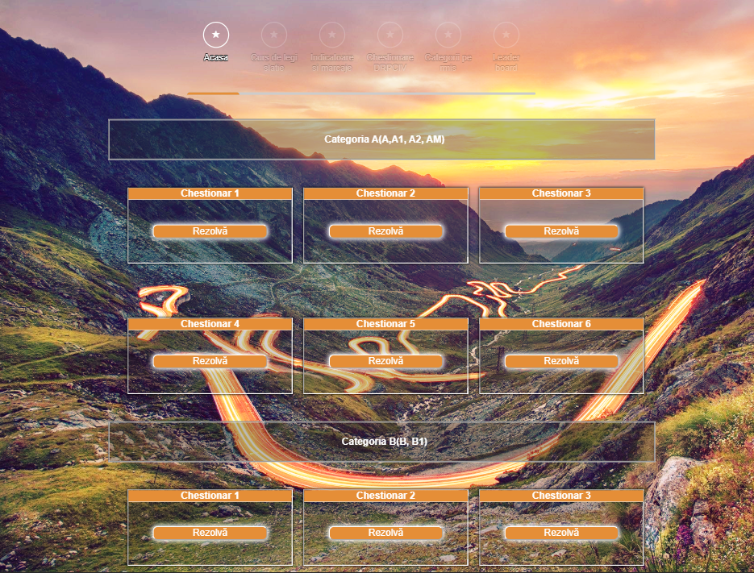

2. Introducere
- Titlul:'Faster One' face parte din gama Googleapis si a fost selectat dintre numeroasele fonturi existente pentru ca se imbina cu viziunea noastra in ceea ce priveste ideea de miscare, rapiditate/viteza, completand conceptul de automotive
- Titlu pagini Logare/Inregistrare :'Fredericka the Great' amplifica ideea de interfata prietenoasa avand un caracter jucaus.
- Continut pagini: 'Arial, Helvetica', un font clasic care nu incarca vizual si care potriveste cu designul nostru minimalist
- Butoane:'Arial, Helvetica', am abordat acelasi font folosit la continutul paginilor pentru a oferi unitate
- Titlu: "reveal si flow" pentru a oferi dinamism paginii si pentru a amplifica efectul de miscare
- Autentificare si Logare: "parallax background effect" acesta realizeaza miscarea fundalului, pentru o interfata mai prietenoasa
- Butoane: "pulse" pentru a inbunatati experienta userului in aplicatie; efectele de hover ce realizeaza miscarea cardurilor
- Logare
- Inregistrare
- Delogare
- Rezolvarea de chestionare
- Parcurgerea cursurilor de legislatie si a informatiilor despre marcaje si indicatoare
- Vizualizarea clasamentului
- Vizualizarea progresului
- Anuleaza/Ofera drepturi de administrator utilizatorilor
- Sterge conturile utilizatorilor neforiti
- Insereaza/Sterge/Modifica intrebarile din chestionare
- 16 ani
- Mopede, categoria AM
- Motociclete ușoare, categoria A1
- Cvadricicluri, categoria B1
- 18 ani
- Motociclete standard, categoria A2 - În general, pentru a obține un permis categoria A2, trebuie să fi condus cel puțin 2 ani o motocicletă din categoria A1. Altfel, puteți obține direct permisul în momentul în care împliniți o vârstă minimă superioară, de regulă 24 de ani.
- Mașini, categoria B, BE
- Vehicule de mărime medie, categoria C1, C1E
- 20 ani
- Motociclete grele, categoria A - În general, pentru a obține un permis categoria A, aveți nevoie de cel puțin 2 ani de experiență la categoria A2. Altfel, puteți obține direct permisul în momentul în care împliniți o vârstă minimă superioară, de regulă 24 de ani.
- 21 ani
- Vehicule mari, categoria C, CE
- Microbuze, categoria D1, D1E
- 24 ani
- Autobuze, categoria D, DE
2.1 Cerinta proiectului
Cerinta proiectului pe care l-am realizat este dezvoltarea unei aplicatii Web ce ofera suport pentru invatarea semnelor rutiere si a regulilor de circulatie din Romania. Pagina pune la dispozitia utilizatorilor pentru fiecare categorie de semne , informatii privind semnificatia , tipul,regulamentele in vigoare, relatii cu alte semne de interes, contextul de utilizare, cat si sugestii privind comportamentul soferului/pietonului.
2.2 Structura proiectului
TraST isi propune sa vina in ajutorul persoanelor ce doresc sa obtina permisul de conducere si sa stapaneasca teoria si legislatia in totalitate. Aceasta pune la dispozitia utilizatorului tot ce este nevoie pentru a promova examenul teoretic .
De asemenea sistemul monitorizeaza progresul inregistrat de catre fiecare utilizator in procesul de invatare si genereaza un clasament al celor mai sarguinciosi utilizatori, disponibil sub forma de flux de date RSS.
Aplicatia este structurata astfel incat urmand 3 pasi simpli utilizatorul va avea succes garantat!
In "Pasul 1 Legislatie si teorie" se regaseste intreaga teorie pentru legislatie impartita in 4 cursuri: Mecanica, Prim - ajutor, Conducere ecologica si Conduita preventiva.
In "Pasul 2 Indicatoare si marcaje" se regasesc explicate toate indicatoarele, semnele de circulatie, marcajele rutiere nationale si internationale pentru soferii incepatori .In "Pasul 3 Chestionare DRPCIV" se regasesc o varietate larga de intrebari de la examenul oficial DRPCIV pentru categorii A, B, C, D, E, cu raspunsuri verificate de profesionisti si actualizate periodic in conformitate cu legislatia in vigoare .
2.3 Organizarea proiectului
2.3.1 Interfata proiectului
In urma discutiei realizate de catre membrii echipei s-a stabilit adoptarea unui design minimalist in cadrul paginii principale cu scopul de a evidentia elementele cheie: titlul, meniul si butoanele de navigare. In ceea ce priveste paginile secundare, precum Legislatie,Indicatoare si marcaje, Chestionare si Profil etc. s-a urmarit organizarea informatiei intr-un mod cat mai compact, dar atractiv pentru utilizator, acoperind in totalitate normele legislative aflate in vigoare.
Laitmotivul paginii este redat prin folosirea unei nuante de portocaliu (#E58E37), iar din punct de vedere vizual TraST se remarca prin:
Font:

Animatie
Background
S-a urmarit crearea unui traseu prin aplicatie , fiecare pagina avand in copozitia sa imagine ce infatiseaza o strada.

2.3.2 Tehnologii utilizate
Partea de client a fost marcata in HTML5, codul fiind insotit de foi de stiluri CSS.In continuare am adoptat principiul responsive al design-ului web pentru a oferi utilizatorilor de pe orice device o experient placuta. De asemenea pe partea de backend s-a folosit Ajax pentru schimbul de date cu serverul prin intermediul requesturilor XMLHttp. Partea de server este acoperita de aplicatia Xampp, care ne-a pus la dispozitie Apache si MySQL.
Aplicatia utilizeaza pentru stocare si management baza de date MySQL. In aceasta se regasesc date priviind utilizatori autentificati si detalii despre progresul inregitrat. In aceiasi maniera s-a folosit baza de date pentru generarea eficienta, pe baza unui template a cursurilor de legislatie, marcaje, indicatoare, cat si pentru generarea chestionarelor.
Toate tranzactiile din si catre baza de date au fost realizate prin intermediul PHP, cum ar fi inserarea de noi utilizatori , updatarea intrebarilor din chestionare, administrarea drepturilor de admin etc.
Pentru generarea dinamica a profilului fiecarui utilizator si a clasamentului, s-au generat secvente de cod HTML din JavaScript, iar in cazul celei din urma este posibila exportarea ca flux de date RSS conform bazei de date.
2.3.3 Functionalitati
Am realizat functionalitatile pentru utilizator:



Am realizat functionalitatile pentru administrator, care pe langa actiunile expuse in cadrul de mai sus, are urmatoarele posibilitati:
3. Utilizarea paginii
Acestea reprezinta indicii despre modul in care trebuie utilizat un obiect, furnizat in mod obisnuit de obiectul insusi sau de contextul sau. De exemplu, chiar daca nu ati vazut niciodata o cana de cafea, utilizarea ei este desul de naturala. Manerul este format pentru a prinde usor, iar vasul are o deschidere mare in partea superioara, cu un put gol in interior.
Aplicatia TraSt este una destul de predictiva pentru un utilizator care a interactionat si cu alte aplicatii software. Initial un utilizator nelogat are acces la pagina principala si la restul resurselor, singurul deficient fiind faptul ca nu-i este inregistrat progresul.
Utilizarea aplicatiei la capacitate maxima este creare unui cont de utilizator sau logarea in cazul in care utilizatorul are deja un cont.
Existenta unor hinturi incadrul formularelor de Autentificare, respectiv Logare il poate ajuta pe utilizator in situati in care est confuz despre cum ar trebui sa completeze. Tot aici se gaseste functia de validare care il ajuta pe utilizator sa inteleaga cum ar trebui sa completeze anumite campuri pentru a finaliza cu succes introducerea anumitor date. In imaginea de mai jos se poate vedea ca in momentul in care un utilizator doreste sa isi creeze un cont i se specifica in ce format ar trebui sa fie emailul .
Pentru un proces de invatare eficient recomandam respectarea pasilor ce sunt enumerati in pagina de profil. Astfel utilizatorul este invitat initial sa parcurga cursurile dedicate Legilatiei Rutiere, ca mai apoi sa vizualizeze seria de marcaje si indicatoare puse la dizpozitie. Acesta poate verifica in pagina profilului ce procent a reusit sa acopere din informatiile disponibile in functie de ramura abordata.
Pentru a verifica cunostiintel dobanite pe parcurs va apela la rezolvarea chestionarelor cu intrebari in conformitate cu cele aprobate de DRPCIV in functie de categoria selectata.Aplicatia vine in ajutorul utilizatorului cu o pagina descriptiva unde se gasesc informatii despre fiecare categorie. Tot in acest cadru, scorul total afisat pe profil este calculat in functie de primul rezultat obtinut in urma efectuarii unui chestionar, insa utilizatorul are dreptul de a realiza de un numar nedefinit acelasi chestionar.
De asemena pagina de profil permite vizualizarea rezultatelor obtinute la fiecare chestionar rezolvat integral, insotit de unul dintre cele doua calificative Admis/Respins.
4. Audienta
TraSt este o aplicatie ce se adreseaza unui public larg. Nu existe limită maximă de vârstă pentru deținerea unui permis de conducere. Acesta rămâne valabil atâta timp cât, din punct de vedere medical, sunteți apt să conduceți, dar trebuie să îndepliniți următoarele cerințe cu privire la vârsta minimă:
Criterii medicale minime
Înainte de a vă elibera permisul de conducere, autoritățile trebuie să verifice dacă, din punct de vedere medical, sunteți apt să conduceți. De asemenea, ar putea fi nevoie să efectuați un control medical ori de câte ori vă reînnoiți permisul de conducere sau după ce împliniți o anumită vârstă. În cazul șoferilor de camion sau de autobuz, controalele medicale se efectuează o dată la 5 ani.